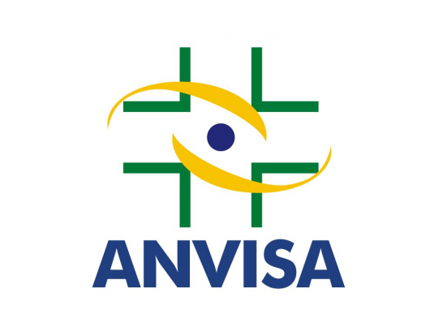

Revelado: movimentos mediterrâneos que ajudam no controle da pressão alta
Estudos recentes publicados por diversos pesquisadores cintíficos e universidades internacionais, revelaram a relação entre hipertensão, ou como alguns chamam, pressão alta, e os exercícios e atividades físicas.
Esses estudos científicos (que podem ser acessando clicando nos links presentes no final dessa página) revelaram como as pessoas que tem um nível de pressão acima do normal podem realizar movimentos de exercícios físicos com o intuito de auxiliar no controle da hipertensão
Os melhores movimentos que você pode realizar em sua casa para auxiliar no controle da hipertensão são de origem mediterrânea
Esses movimentos auxiliam no controle da pressão alta, porque, ao fazer movimentos de atividades físicas, você melhora seu condicionamento. Dessa forma, você consegue oxigenar melhor seu corpo e também ajuda na limpeza arterial, fazendo com que seu corpo tenha o mesmo desepenho físico, porém sem a necessidade de aumentar a pressão, logo, apenas realizando alguns exercícios diariamente você consegue auxiliar seu cipro no controle da hipertensão
Os exercícios que você pode fazer para ajudar no controle da hipertensão são: bibicleta, aeróbico, corridas em jejum e treinos em academia
No entanto, selecionamos os melhores movimentos que você pode fazer em sua casa em apenas 5 minutos que são de origem mediterrânea e podem te ajudar a controlar sua hipertensão da melhor forma
Para receber acesso a quais são esses exercícios, compre no botão abaixo seu acesso ao EBOOK DIGITAL que te ensina os movimentos corretos quete auxiliam a controlar sua hipertensão.
Por ser um produto digital, não é necessário envio do produto, pois você recebe acesso a tudo via EMAIL! Logo, o reembolso é mais fácil também, para pedir reembolso basta nos enviar um email e pronto!
Contato: +55 31 945683256 - Email:produtosuporteaqui@gmail.com
Loja Divino Luxo, CNPJ 39.504.571/0001-32, Av Juscelino Kubitschek, Londrina, Paraná, Brasil
Liberado e aprovado pela Anvisa nos termos da RDC 240 de 26/07/2018, sendo dispensado de registro, pois é avaliado como 100% seguro para o consumo da população.
Liberado e aprovado pela Anvisa nos termos da RDC 240 de 26/07/2018, sendo dispensado de registro, pois é avaliado como 100% seguro para o consumo da população.
